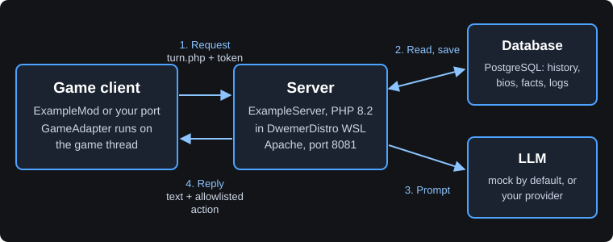

Custom Mod Guide
Build the server and client of your own AI NPC mod from two public templates. ExampleServer is a small PHP 8.2 and PostgreSQL server that runs inside DwemerDistro. ExampleMod is a Windows console "fake game" that shows the game side. A player line goes in; an NPC reply and, at most, one safe action come back.
What The Templates Are
- Starting points for your own mod. Copy them into your own repositories, rename them, and replace the console game with your engine.
- Mock-first. A fresh install answers with predictable mock replies. The first run needs no LLM provider, API key or voice service.
- Local by design. The server runs on one PC inside DwemerDistro WSL, or on a trusted local network. The dashboard has no login and the token travels over plain HTTP.
What they are not: ExampleMod is not a plugin for any real game. It has no engine SDK and no game hooks, and no game is supported until someone builds and tests a port in that game. Real LLM and voice providers are optional code paths; the smoke checks cover mock mode only.
The templates are independent of CHIM, STOBE and Dialectic. They share no Git history and receive no automatic updates from those products.
How A Request Flows


- The client sends the player's line to
turn.phpwith a freshrequest_id, the session, the NPC and the token. - The server loads that NPC's history, bio and matching facts from its own database.
- It asks the mock (or your configured LLM) for a reply, keeps only allowlisted actions, and saves the exchange.
- The client checks the request ID and NPC, then shows the subtitle and runs the action through its own allowlist on the game thread.
The full contract is in PROTOCOL.md, identical in both repositories.
Choose An Install Route
| Route | Server address |
|---|---|
Manual install (main or dev) | http://127.0.0.1:19000/ExampleServer |
| Launcher Mods > Custom mods | http://127.0.0.1:19000/custom-mods/example-server |
Custom mods port: DwemerDistro gives all custom PHP mods one shared port on this PC, CUSTOM_MODS_PORT (default 19000, allowed 19000-19999). Each mod has its own path and database, and official ports such as 8081 do not change. See Ports and branches.
Every route builds the console client separately on Windows.
Guide Map
- Installation: ports, installing the server, building the client and pairing them.
- Configuration: LLM, API keys, PocketTTS, Parakeet and optional NPC selection.
- Data and Memory: NPC bios, facts, profiles, memory and session checkpoints.
- Testing: the web conversation tester, events, logs, actions and cancellation.
- Porting: replace the console game with your engine, hand off to a coding agent, extend the dashboard.
- Updates and Backups: versions, migrations, backups and branch compatibility.
- Publishing: your own repositories, licence, branding, launcher manifest and private data.
Full Template Documentation
This guide covers the common tasks. Each topic has one canonical document in the template repositories:
- START_HERE.md: orientation, feature status, walkthrough and troubleshooting by request ID.
- SETUP.md: installation and operations.
- CONNECTORS.md: copyable provider settings.
- UI_GUIDE.md: dashboard pages and adding your own.
- ExampleMod README: client commands, settings and smoke checks.
These links show each template's default main branch. The dev branch is for development.
Next step: Install the server and client.